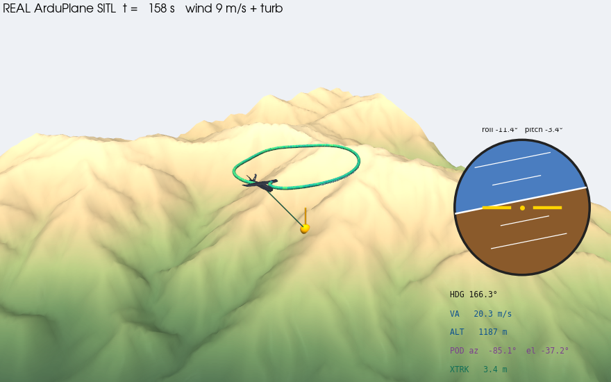
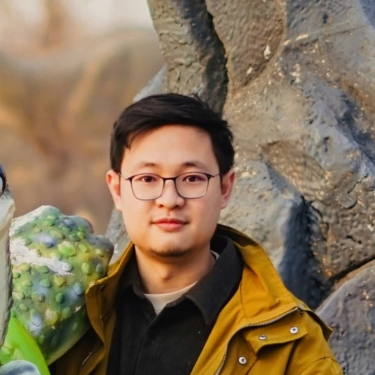
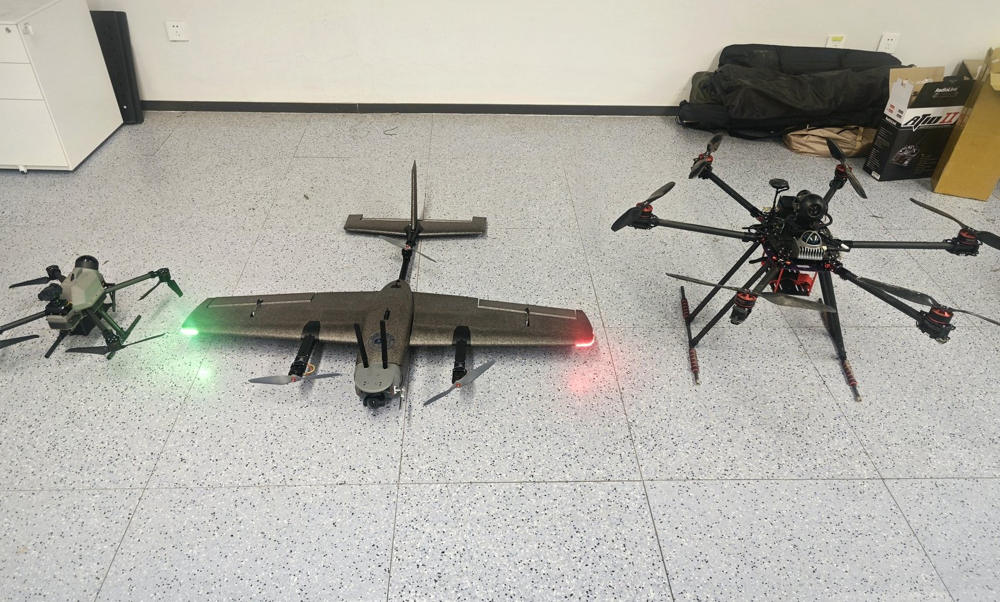
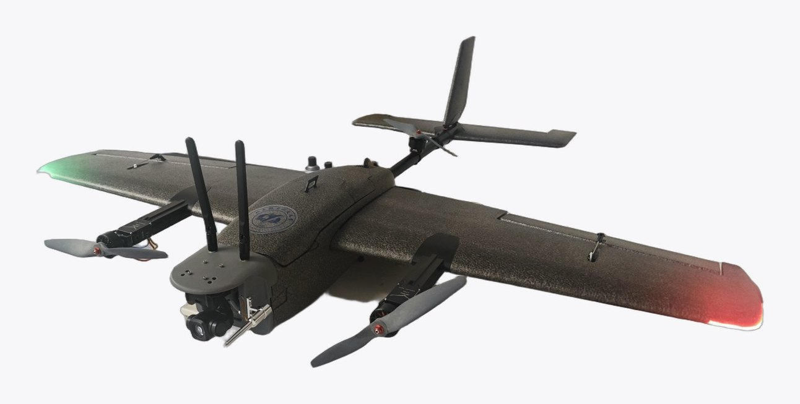
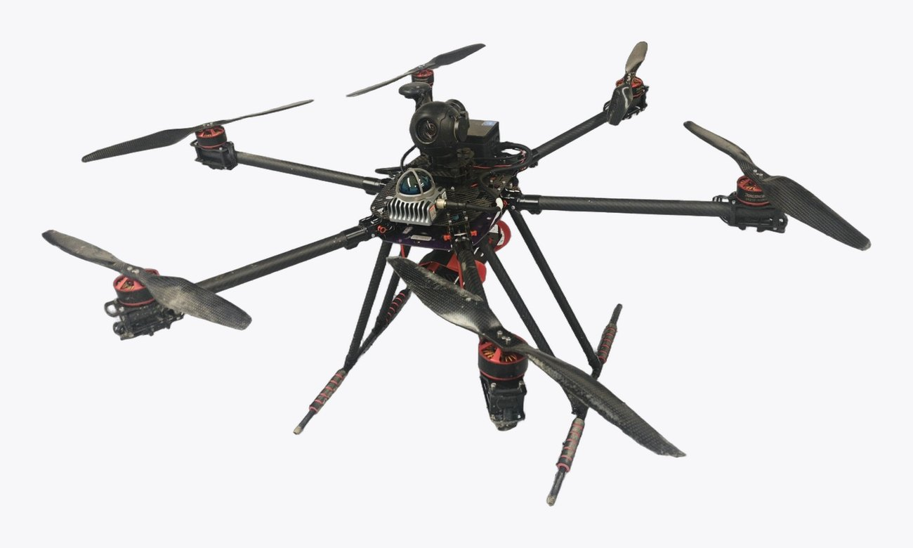
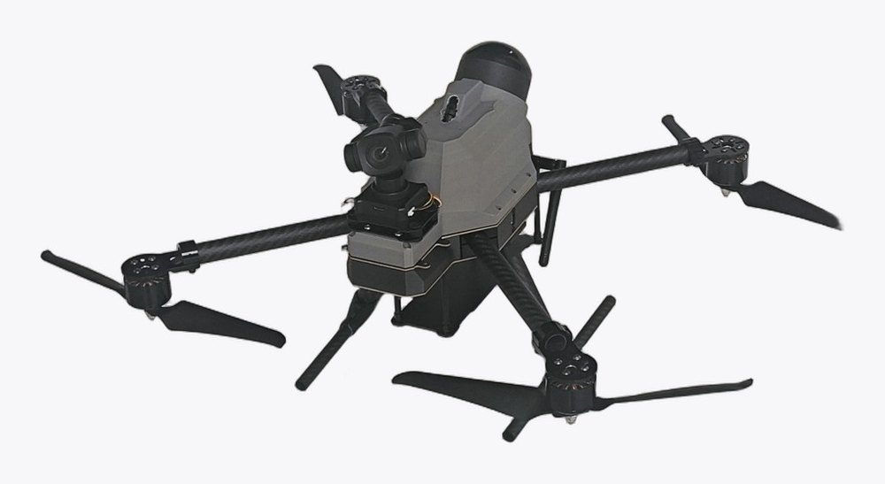
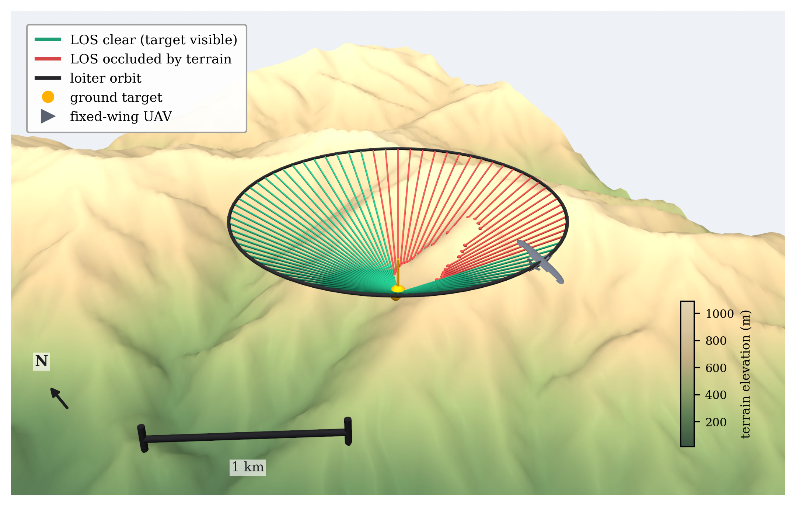
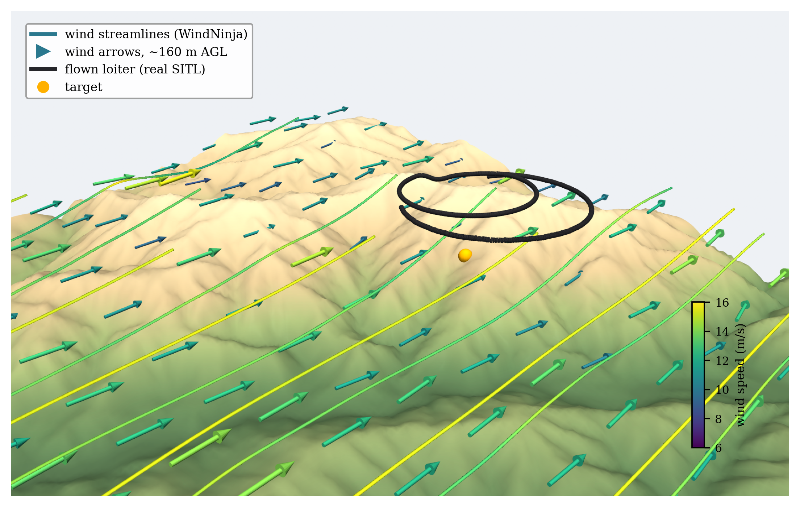

I am a Ph.D. student at Beihang University (BUAA), advised by Prof. Lei Guo (Academician, CAS) and Prof. Jianzhong Qiao. My research is about giving small fixed-wing UAVs the autonomy to see and track things on the ground: I plan the aircraft's flight and its camera-gimbal motion together so a target stays in frame, and work on disturbance-rejection control and vision-based autonomous landing.
Before my Ph.D. I spent three years as a senior algorithm engineer at DiDi Chuxing (order dispatching, ETA prediction, large-scale online decision models), then a year as a research assistant at Zhejiang University's Huzhou Institute with Prof. Fei Gao, working on autonomous flight and trajectory planning. I also founded a UAV company that delivered an aerial-survey crop-management system to a provincial customer, and interned on the flight-control team at DJI (BSP / HAL development, core repository access). M.S. (2019) and B.S. (2016) from UESTC. National champion, ROBOCON 2015.
Open to full-time positions starting July 2027 — flight control, gimbal / line-of-sight stabilization, motion planning & control.
Plan the aircraft trajectory and the camera-gimbal pointing at the same time, so a ground target stays inside the field of view while the plane keeps flying.
Trajectory generation and control for small fixed-wing drones — smooth, feasible flight paths under real aerodynamic and turn-rate limits.
Estimating and cancelling disturbances (wind, coupling, actuator errors) so the vehicle and the pod point where they should.
Letting a fixed-wing aircraft recognise its own takeoff strip and land itself back visually — teach-and-repeat homing.
Software copyright: multi-stage loop simulation platform for airborne electro-optical tracking systems.
Aircraft I build, instrument and fly — fixed-wing VTOL, multirotor carriers, and the electro-optical gimbals they carry. Everything below is flight hardware, not renders.






